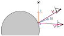
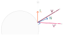

Specularity#
Resulting code: step105
Resulting code: step105-vanilla
A first thing that our material model lacks is specular highlight. This is a visual effect that can be seen on any shiny object, namely any object that is not 100% rough:
The white highlights on the pawn are a typical specular effect.#
A key difference between diffuse and specular lighting, is that the latter depends on the view point!
Look around, locate any glossy/reflective object, and move your head. You should notice that the specular highlights move as well, while neither the object nor the source light changed.
Physically, this is due to the fact that a single point on a surface emits a different light intensity in different directions.
The light received from view point V and V' is different, despite the light direction L and surface normal N remaining the same.
Phong model#
In theory, any surface element reflects to some extent the light that it received from all the directions. But when doing real time rendering, we cannot afford to compute this exactly, we need an approximation model that can be efficiently computed.
The Phong model considers only the light coming from the direction of the light (it does not account for inter-object reflection). It is one of the oldest reflection models but it is still a good start.
Note
The Phong model per se includes an ambient, diffuse and specular component, we only focus on the specular part here.
Reflected direction#
If the surface were a perfect mirror, it would appear black from everywhere, except if the view point is exactly in the reflected direction \(R\).
This direction is the symmetric of the light direction \(L\) with respect to the normal \(N\). Since this is a very common operation, it is natively supported by WGSL (and other shading languages):
let L = direction;
let N = normal;
let R = reflect(-L, N); // equivalent to 2.0 * dot(N, L) * N - L
Note
The reflect function assumes that the direction we give is the direction coming from the light, but for the rest of the code we define L as being the direction towards the light.
V' sees more reflected light than V because it is closer to the reflected direction R.
For a perfect mirror, we would have something like specular = (R == V), but this is never perfectly equal, and nothing is a perfect mirror anyways. Instead we use the angle between the view direction V and the reflected direction R, or rather its cosine because it is easier to compute:
let cosAngle = dot(R, V);
// The closer the cosine is to 1.0, the closer V is to R
var specular = 0.0;
if (cosAngle > 0.99) {
specular = 1.0;
}
View direction#
🤔 How do I get the direction \(V\) exactly?
It’s not obvious indeed. First of all, we are going to compute it in the vertex shader:
struct VertexOutput {
// [...]
@location(3) viewDirection: vec3<f32>,
}
// in vertex shader
out.viewDirection = /* ... */;
// in fragment shader
let V = normalize(in.viewDirection);
An important thing to note is that we are working in world space coordinates, because this is the space in which we express our light directions. We could do differently, what matters is to be consistent.
So we are going to split the line that populates out.position:
let worldPosition = uMyUniforms.modelMatrix * vec4<f32>(in.position, 1.0);
out.position = uMyUniforms.projectionMatrix * uMyUniforms.viewMatrix * worldPosition;
let cameraWorldPosition = /* ... */
out.viewDirection = cameraWorldPosition - worldPosition.xyz;
The information of camera position is somehow contained in the viewMatrix, but extracting it requires to compute a matrix inverse, which is costly and thus not advised. So it is better to provide it as a uniform.
let cameraWorldPosition = uMyUniforms.cameraWorldPosition;
void Application::updateViewMatrix() {
// [...]
m_uniforms.cameraWorldPosition = position;
m_device.getQueue().writeBuffer(
m_uniformBuffer,
offsetof(MyUniforms, cameraWorldPosition),
&m_uniforms.cameraWorldPosition,
sizeof(MyUniforms::cameraWorldPosition)
);
}
void Application::updateViewMatrix() {
// [...]
m_uniforms.cameraWorldPosition = position;
WGPUQueue = wgpuDeviceGetQueue(m_device);
wgpuQueueWriteBuffer(
queue,
m_uniformBuffer,
offsetof(MyUniforms, cameraWorldPosition),
&m_uniforms.cameraWorldPosition,
sizeof(MyUniforms::cameraWorldPosition)
);
}
Note
Alternatively, you can do the whole shading in view space. The camera position in view space is always vec3<f32>(0.0) and all you need to do is to transform the light direction like we did for the vertex normal, except using the view matrix:
let L_viewspace = (uMyUniforms.viewMatrix * vec4<f32>(L_worldspace, 0.0)).xyz;
Phong specular#
Now that we can compute R and V, let us test to set shading += specular; in the loop over light sources in the shader.
The reflection term creates a highlight that moves like a real specular highlight, although it is a bit harsh.
// We clamp the dot product to 0 when it is negative
let RoV = max(0.0, dot(R, V));
let hardness = 2.0;
let specular = pow(RoV, hardness);
A smoother specular highlight, hardness = 2.0.
The hardness parameter controls the extent of the specular highlight: the higher it is the smallest the highlight. I suggest you expose this in the GUI (and through a uniform) to be able to play with it!
A specular highlight with hardness = 32.0.
Consolidating#
We can now put together the diffuse and specular contributions of the lighting. Note how I did not multiply the specular with the base color: for non-metals, specular highlights are always white. We’ll refine this in the chapter about physically-based materials.
let kd = 1.0;
let ks = 0.5;
let color = baseColor * kd * diffuse + ks * specular;
Diffuse and specular contributions combined, hardness = 16.0, kd = 1.0, ks = 0.5.
The constants kd and ks are properties of the material telling whether it is more or less glossy. Again, expose these in the GUI so that you can play with them!
The material properties exposed in the Lighting GUI.#
Conclusion#
We have acquired in this chapter a good intuition of how to model the specular highlight of material. The next chapters refine this by first modifying the local normal against which the light bounces and second by introducing a more physically grounded model of materials.
Resulting code: step105
Resulting code: step105-vanilla